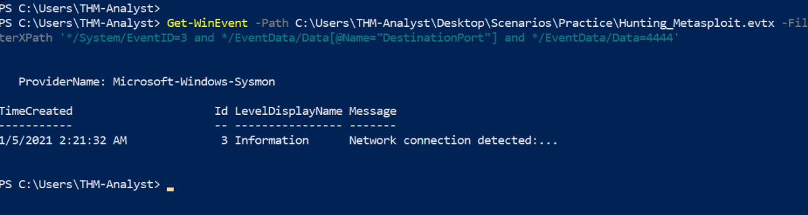

Security Utilities
Sysmon
System Monitor (Sysmon) is a Windows system service and device driver that, once installed on a system, remains resident across system reboots to monitor and log system activity to the Windows event log. It provides detailed information about process creations, network connections, and changes to file creation time. By collecting the events it generates using Windows Event Collection or SIEM agents and subsequently analyzing them, you can identify malicious or anomalous activity and understand how intruders and malware operate on your network.
Events within Sysmon are stored in Applications and Services Logs/Microsoft/Windows/Sysmon/Operational & can be viewed in Windows Event Viewer.
Sysmon Config Overview
Sysmon requires a config file in order to tell the binary how to analyze the events that it is receiving. You can create your own Sysmon config or you can download a config. Here is an example of a high-quality config that works well for identifying anomalies created by SwiftOnSecurity: Sysmon-Config. Sysmon includes 24 different types of Event IDs, all of which can be used within the config to specify how the events should be handled and analyzed. Below we will go over a few of the most important Event IDs and show examples of how they are used within config files.
When creating or modifying configuration files you will notice that a majority of rules in sysmon-config will exclude events rather than include events. This will help filter out normal activity in your environment that will in turn decrease the number of events and alerts you will have to manually audit or search through in a SIEM. On the other hand, there are rulesets like the ION-Storm sysmon-config fork that takes a more proactive approach with it's ruleset by using a lot of include rules. You may have to modify configuration files to find what approach you prefer. Configuration preferences will vary depending on what SOC team so prepare to be flexible when monitoring.
https://github.com/SwiftOnSecurity/sysmon-config/blob/master/sysmonconfig-export.xml
https://github.com/ion-storm/sysmon-config/blob/master/sysmonconfig-export.xml
Note: As there are so many Event IDs Sysmon analyzes.
Running Sysmon (Lets use SwiftOnSecurity Sysmon-Config File):
Sysmon.exe -accepteula -i sysmonconfig-export.xml
Note: At any time you can change the configuration file used by uninstalling or updating the current configuration and replacing it with a new configuration file. For more information look through the Sysmon help menu.
Update: Sysmon.exe -c sysmonconfig-export.xml
Uninstall: Sysmon.exe -u
Detecting Metasploit
Sysmon-Config Rule:
<RuleGroup name="" groupRelation="or">
<NetworkConnect onmatch="include">
<DestinationPort condition="is">4444</DestinationPort>
<DestinationPort condition="is">5555</DestinationPort>
</NetworkConnect>
</RuleGroup>
Eg.We can put these filters together with various attributes and data to get the most control out of our logs. Look below for an example of using Get-WinEvent to look for network connections coming from port 4444.
Powershell Command:
Get-WinEvent -Path <Path to Log> -FilterXPath '*/System/EventID=3 and */EventData/Data[@Name="DestinationPort"] and */EventData/Data=4444'
Demo:

Detecting Mimikatz
Sysmon-Config Rule:
<RuleGroup name="" groupRelation="or">
<ProcessAccess onmatch="exclude">
<SourceImage condition="image">svchost.exe</SourceImage>
</ProcessAccess>
<ProcessAccess onmatch="include">
<TargetImage condition="image">lsass.exe</TargetImage>
</ProcessAccess>
</RuleGroup>
Powershell Command:
Get-WinEvent -Path <Path to Log> -FilterXPath '*/System/EventID=10 and */EventData/Data[@Name="TargetImage"] and */EventData/Data="C:\Windows\system32\lsass.exe"'
Hunting Malwares
Sysmon-Config Rule:
<RuleGroup name="" groupRelation="or">
<NetworkConnect onmatch="include">
<DestinationPort condition="is">1034</DestinationPort>
<DestinationPort condition="is">1604</DestinationPort>
</NetworkConnect>
<NetworkConnect onmatch="exclude">
<Image condition="image">OneDrive.exe</Image>
</NetworkConnect>
</RuleGroup>
Powershell Command:
Get-WinEvent -Path <Path to Log> -FilterXPath '*/System/EventID=3 and */EventData/Data[@Name="DestinationPort"] and */EventData/Data=<Port>'
Hunting Startup Persistence
Sysmon-Config Rule:
<RuleGroup name="" groupRelation="or">
<FileCreate onmatch="include">
<TargetFilename name="T1023" condition="contains">\Start Menu</TargetFilename>
<TargetFilename name="T1165" condition="contains">\Startup\</TargetFilename>
</FileCreate>
</RuleGroup>
Hunting Registry Key Persistence
Sysmon-Config Rule:
<RuleGroup name="" groupRelation="or">
<RegistryEvent onmatch="include">
<TargetObject name="T1060,RunKey" condition="contains">CurrentVersion\Run</TargetObject>
<TargetObject name="T1484" condition="contains">Group Policy\Scripts</TargetObject>
<TargetObject name="T1060" condition="contains">CurrentVersion\Windows\Run</TargetObject>
</RegistryEvent>
</RuleGroup>
Detecting Evasion Techniques
A) Hunting Alternate Data Streams
Sysmon-Config Rule:
<RuleGroup name="" groupRelation="or">
<FileCreateStreamHash onmatch="include">
<TargetFilename condition="contains">Downloads</TargetFilename>
<TargetFilename condition="contains">Temp\7z</TargetFilename>
<TargetFilename condition="ends with">.hta</TargetFilename>
<TargetFilename condition="ends with">.bat</TargetFilename>
</FileCreateStreamHash>
</RuleGroup>
Powershell Command:
Get-WinEvent -Path <Path to Log> -FilterXPath '*/System/EventID=15'
B) Detecting Remote Threads
Sysmon-Config Rule:
<RuleGroup name="" groupRelation="or">
<CreateRemoteThread onmatch="exclude">
<SourceImage condition="is">C:\Windows\system32\svchost.exe</SourceImage>
<TargetImage condition="is">C:\Program Files (x86)\Google\Chrome\Application\chrome.exe</TargetImage>
</CreateRemoteThread>
</RuleGroup>
Powershell Command:
Get-WinEvent -Path <Path to Log> -FilterXPath '*/System/EventID=8'